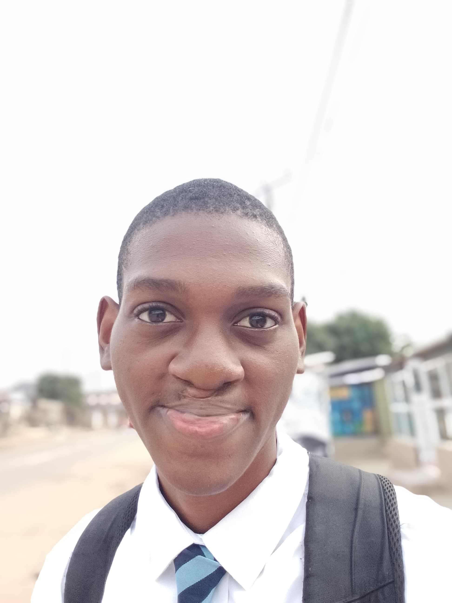

David Owolabi
About Me
David Owolabi, full stack web development student in Lagos, Nigeria, studying at New Horizon and pursuing a software development degree through BYU-Idaho. I build real projects like Rooted, a React-based NGO donation platform where I led infrastructure and debugging for a five-person team, plus a deployed React quiz app and hands-on work in data annotation. When I'm not coding, I'm training in calisthenics, working toward handstand push-ups and muscle-ups.
